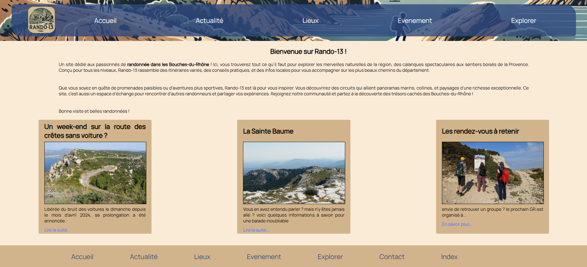

Developpeur IT
Lucas De Souza Pereira
👨🎓 actuellement en étude à la plateforme
💼 recherche alternance sur marseille
De l'industrie Médicale au développement IT :
👟 Mon Nouveau Départ
Pendant plusieurs années, j’ai travaillé comme technicien méthodes dans l’industrie médicale.
Ce rôle m’a permis d’optimiser des processus, résoudre des problématiques techniques et collaborer avec des équipes multidisciplinaires pour fabriquer des dispositifs médicaux de qualité, au service des patients.
🎢 Le grand saut
Mais au fil du temps, une autre passion s’est révélée : la technologie et le développement IT.
Fasciné par l’impact des algorithmes, des services numériques et de l’automatisation, j’ai décidé de me réorienter pour participer activement à cette transformation digitale.
🎯 Mon Ambition
Mon objectif est clair :
Combiner mon expérience en industrie médicale avec mes nouvelles compétences en informatique pour contribuer à des projets innovants, notamment dans la santé ou d’autres secteurs stratégiques
Mes projets
Rando-13
Premiers projet en htlm css, Rando-13 est un site web dédié à l'univers de la randonnée dans les bouches du rhône
languages appris :
Python
projet à venir
languages appris :
Contacts
💼 Je suis actuellement à la recherche d'une alternance pour septembre 2025.
🔗 Si mon profil vous intéresse, je serais ravi d'échanger sur vos projets et de discuter des défis que nous pourrions relever ensemble.